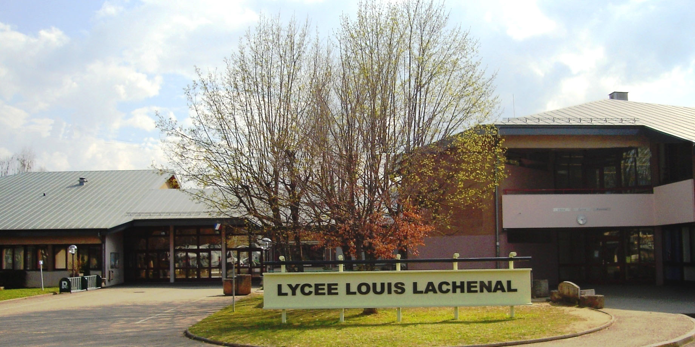
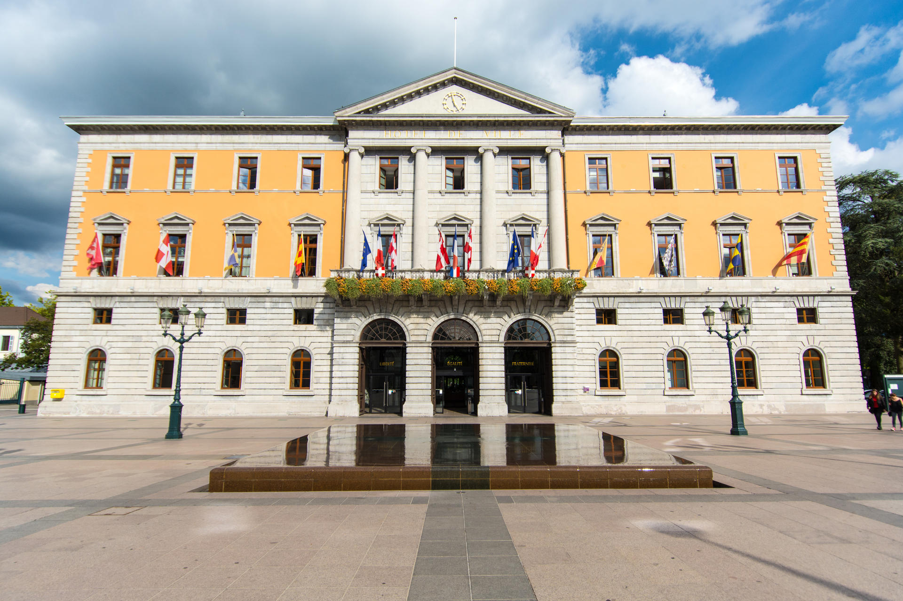
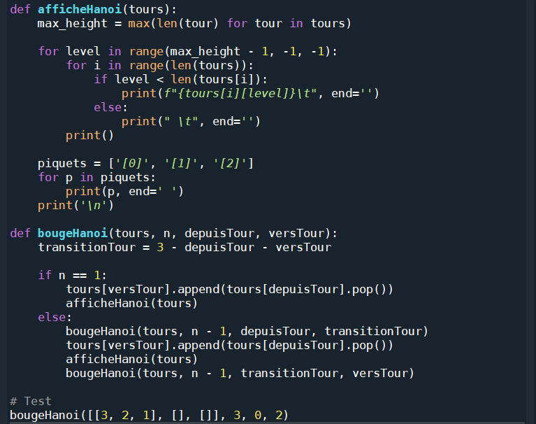
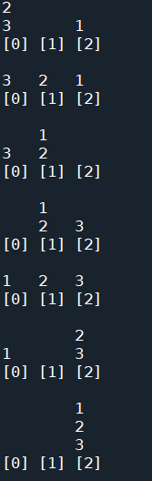
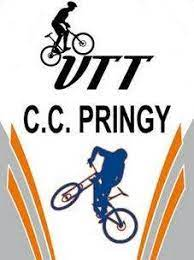
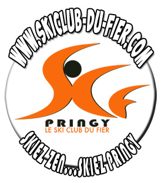

À propos de moi
Je suis Florian Guetat, actuellement étudiant en première année
de Bachelor Universitaire de Technologie en Réseaux et Télécommunications à Aubière (63).
Je suis fortement motivé à travailler dans le domaine de la cybersécurité. Les projets réalisés dans ma spécialité en Numérique et Sciences de l'Informatique, ainsi que l'étude approfondie du cryptage des données lors de certaines leçons de Mathématiques expertes, ont consolidé cette ambition. Cela m'a poussé à envisager de poursuivre mes études en Bachelor Universitaire de Technologie en Réseaux et Télécommunications. Après ces trois années, mon objectif serait de continuer avec un master en cybersécurité, suivi d'un doctorat en cryptographie et sécurité numérique. L'objectif ultime est de travailler dans le domaine de la cybersécurité et pourquoi pas plus tard devenir un hacker éthique, quelqu'un qui utilise ses compétences en informatique pour identifier et résoudre des problèmes de sécurité, tout en respectant l'éthique et la légalité, et contribuant à renforcer la sécurité des systèmes informatiques.
Le cheminement que j'ai décrit commence par un Bachelor en Réseaux et Télécommunications afin de poser des bases techniques solides. Ensuite, le master en cybersécurité me permettra de me spécialiser davantage dans le domaine de la sécurité informatique. Enfin, le doctorat en cryptographie et sécurité informatique représente le sommet de ma formation, offrant une expertise avancée et la possibilité de mener des recherches innovantes.
Je suis à la recherche d'un stage à compter mars 2025, dans les domaines des réseaux, des télécommunications ou de la cybersécurité. Le stage durera 10 semaines.
Formation
- Septembre 2023 : Début de ma première année de Bachelor Universitaire de Technologie en Réseaux et Télécommunications à Clermont-Ferrand(63)
- Juin 2023 : Obtention du baccalauréat général mention assez-bien spécialités mathématiques expertes et numérique sciences de l'informatique au lycée Louis Lachenal d'Argonay (74) 
- Septembre 2021 - Juin 2022 : Section sportive arbitre de foot au Lycée Frédéric Faÿs à Villeurbanne(69).
Durant cette formation en trois ans, seront traitées différentes rubriques techniques telles que les réseaux, la programmation, les télécommunications, la téléphonie ou encore la sécurité.
Durant cette année de première générale, j'ai suivi les spécialités Mathématiques, Numérique et Sciences de l'Informatique ainsi que la spécialité Physique-Chimie.

Expériences professionnelles
- Été 2023, Été 2021 : Travail au sein du restaurant "Le Céjo" à Metz-Tessy(74) en tant que aide-cuisine et plongeur.
- Novembre 2019 : Stage de 3ème au sein du restaurant "Le Céjo"(74) en tant qu'aide-cuisinier.
- Août 2021: Chantier de rénovation au sein de la mairie d'Annecy
- 2020-2023: Arbitre de foot au niveau régional
Les qualités que j'ai acquis durant ces expériences sont la curiosité, du fait de devoir s'intéresser au plat réalisé par le chef et de pouvoir progresser afin de devenir davantage autonome à la fin par rapport au début. J'ai également développé mon esprit d'équipe puisque je travaillais au sein d'une entreprise de 4 employés. De plus,je me devais d'être organisé afin de travailler efficacement.

Durant cette expérience professionnelle, j'ai acquis de la rigueur car j'ai participé à la rénovation d'une maison donc il fallait que cette maison soit correctement rénovée. De plus, il fallait également travailler en équipe ce qui a amélioré ma capacité à travailler en équipe.

Le fait d'avoir été arbitre m'a permis d'améliorer mon leadership du fait de devoir prendre des décisions rapides et de faire respecter les règles du jeu. De plus, j'ai également acquis une bonne gestion du stress du fait de devoir rester calme même dans les situations tendues.
Compétences
Réseaux : En réseaux, j'ai appris la configuration d'un réseau informatique en configurant notamment un switch ou en modélisant un réseau à l'aide du logiciel Cisco Packet Tracer. Je considère être à un niveau de 60% par rapport à celui attendu.Programmation : En programmation, j'ai étudié les langages HTML, CSS, Python, SQL, PHP, Javascript et Bash qui m'ont notamment permis de créer ce portfolio. Je me considère à 90% des attentes.
Télécommunication : En télécommunication, j'ai appris certaines caractéristiques de câbles ainsi qu'à réaliser des branchements comportant des appareils éléctroniques tels qu'un oscilloscope. Mon niveau est de 75% des attentes.
Leadership : Cette qualité à été mise à l'épreuve durant tout le temps où j'ai arbitré. Je pense avoir une très bonne maitrise de cette qualité cependant, je ne pense pas être totalement apte à diriger une équipe.
Esprit d'équipe : Cette qualité a été améliorer durant mes expériences professionnelles qui ont été réalisées en équipe. De plus, le fait d'avoir fait 15 ans de foot a également renforcé cette compétence.
Rigueur : La rigueur est une qualité essentielle selon moi. En tant qu'ancien arbitre ou assistant cuisinier, je me devait d'être irréprochable. On m'a également dis durant une expérience professionnelle que j'étais quasiment trop à cheval sur la rigueur.
Organisation : L'organisation, qui je pense va avec la rigueur, est une des qualités qui me correspond le plus.Pour moi, tout doit être planifié et trié instantanément.
Projets
Création d'un programme python Tour d'Hanoi :
En programmation python, j'ai réalisé un projet qui consistais à automatiser la résolution du casse-tête de la Tour d'Hanoï. Ce casse-tête consiste à déplacer une tour composée de plusieurs disques de différentes tailles du bâton gauche vers le bâton droit. Cependant, un seul disque ne peut être déplacer à la fois et un disque ne peut pas se retrouver au dessus d'un disque plus petit. Pour la réalisation de ce projet, j'ai commené par définir la fonction récursive qui prend en arguments le nombre de disques, le poteau source et le poteau cible. Ensuite, j'ai définit un cas de base pour la récursivité. C'est à dire lorsque le nombre de disques est égal à 1 et qu'il faut juste déplacer le disque du poteau source vers le poteau cible. Par la suite, j'ai réalisé un appel récursif afin de déplacer les disques restants du poteau source source vers le poteau intermédiaire puis du poteau intermédiaire vers le poteau source. J'ai également appelé la fonction principale avec le nombre de disques et de poteaux appropriés. Enfin, j'ai éxecuté le code et vérifié la sortie afin de m'assurer que les disques sont déplacés correctement selon les règles du jeu de la tour d'Hanoï. Le résultat a été que le code était fonctionnel et fonctionnais automatiquement.

Création d'un jeu d'enquête :
Dans le cadre du projet de fin d'année, avec l'aide de 2 collègues, nous avons crée un jeu vidéo dont le but est de découvrir qui est le meurtrier. Afin de découvrir qui est cette personne, il faut intéragir avec les différents villageois afin d'obtenir des indices. La réalisation de ce travail a été faite en donnant des apparences, des noms et des proffesions aux villageois à l'aide d'une fonction aléatoire qui choisit ces catégories parmi une base de données que nous avions créé. Ensuite nous avons réaliser le fond du jeu afin qu'on se croit au sein d'un village.Par la suite, nous avons codé les interférences avec les habitants qui elles aussi varient. Pour réaliser ce projet, nous avons utilisé le logiciel Godot. Ce jeu n'a pas été terminé ce qui fait que seule le visuel et quelques intéractions étaient réalisables.


Divers
- Footballeur au sein du club de l'US Pringy en Haute-Savoie(74) de 2008 à 2023 aux niveaux départemental et régional.
- Lors de la saison 2020-2021, je suis devenu entraîneur de football au sein de ce même club où j'entraînais des enfants de 10-11 ans.
- Je suis également devenu arbitre de football au niveau départemental en 2020 puis au niveau régional de 2021 à 2023 pour le compte du club de l'US Pringy(74).
- Je fais également du ski depuis que j'ai 4 ans et j'ai fais 4 ans de ski en club.
- J'ai également fais du VTT de 2012 à 2020 au sein du Cyclo club de Pringy. Au sein de ce club, je faisais du VTT loisir. 
- J'aime bien également lire des livres d'auteurs tels que Émile Zola, Victor Hugo ou Jules Verne. D'ailleurs,Les Misérables est mon livre préféré.

